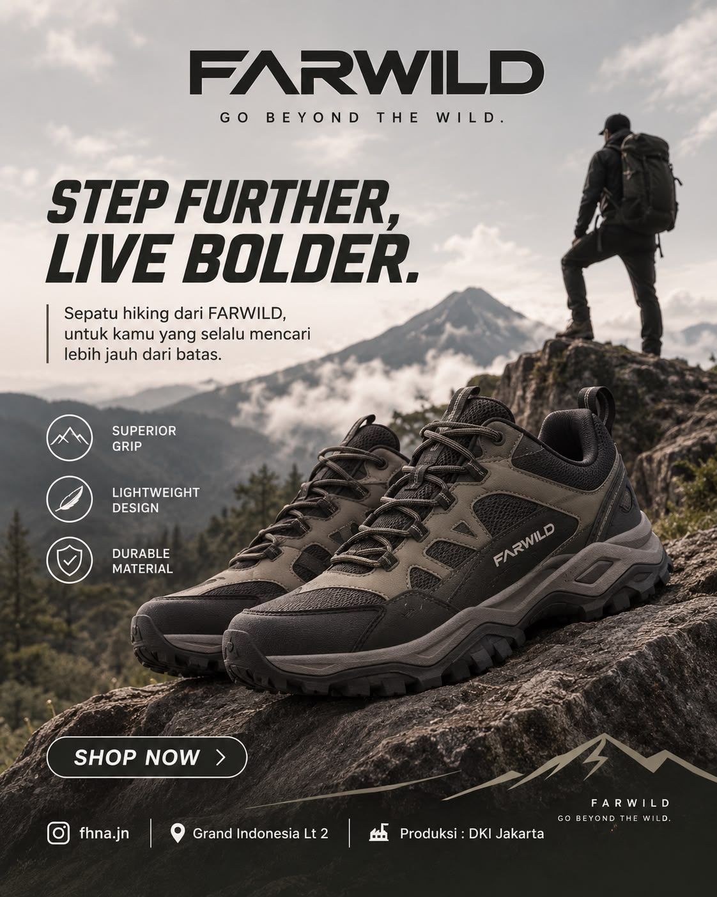
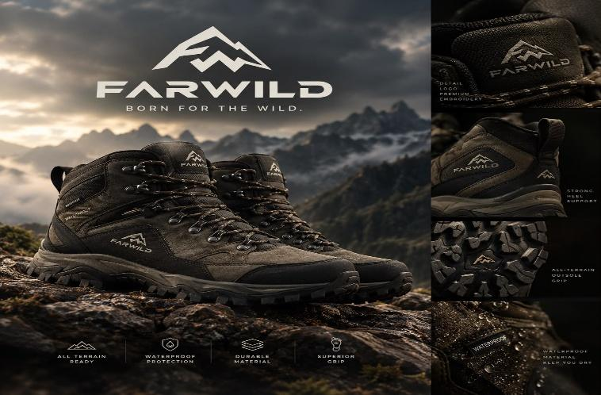
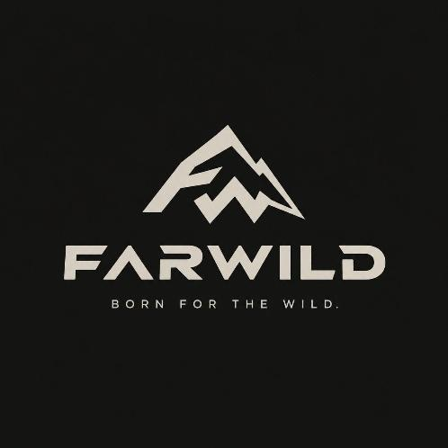

SEPATU HIKING · JAKARTA
Sepatu hiking dari FARWILD, untuk kamu yang selalu mencari lebih jauh dari batas.
GO BEYOND THE WILD.

Enam hal yang kami jaga di setiap pasang FARWILD, supaya langkahmu tetap fokus ke puncak, bukan ke sepatu.
Outsole all-terrain untuk pijakan yang mantap di batu, tanah, dan jalur licin.
Desain ringan yang tetap nyaman dipakai dari pagi buta sampai turun gunung.
Material tahan pakai untuk medan berat, perjalanan panjang, dan cuaca yang berubah.
Material tahan air menjaga kaki tetap kering saat kabut turun atau jalur berair.
Penyangga tumit yang kokoh membantu langkah tetap stabil di tanjakan dan turunan.
Siap untuk berbagai medan, dari jalur setapak hutan sampai punggungan berbatu.
PRODUK

Simbol gunung FARWILD tersulam rapi di lidah sepatu.
Struktur tumit menahan langkah saat medan menurun.
Pola tapak tebal untuk cengkeraman di berbagai permukaan.
Menjaga kaki tetap kering di jalur basah.
Born for the wild.
Tagline FARWILD adalah janji, bukan klaim teknis: kami hadir untuk menemani kamu menjelajah, menghadapi tantangan, dan berani melangkah.

TENTANG FARWILD
FAR diambil dari nama Farhana, pendiri brand ini. WILD mewakili alam liar, kebebasan, dan semangat petualangan. Singkat, mudah diingat, dan langsung terhubung dengan sepatu hiking.
Gunung bergaya geometris dengan garis tegas melambangkan tantangan, perjalanan, dan pencapaian. Bentuknya menyerupai huruf F dan W, sehingga simbol dan nama saling mengikat. Tetap terbaca di sepatu, label, kemasan, dan layar ponsel.
“Born for the Wild” berarti terlahir untuk alam liar. “Go Beyond the Wild” menjadi seruan kampanye kami untuk terus melangkah lebih jauh.
KARAKTER BRAND
Tangguh
Siap menghadapi beragam tantangan dalam setiap petualangan.
Mandiri
Menjelajah alam dan menentukan arah perjalananmu sendiri.
Berani
Mendorong kamu keluar dari zona nyaman dan mencoba hal baru.
Natural
Dekat dengan alam, tercermin pada palet warna bumi di setiap desain.
UNTUK
Pendaki pemula hingga berpengalaman, traveler, dan pencinta aktivitas outdoor usia 18 sampai 35 tahun.
ULASAN PELANGGAN
SLOT ULASAN 1 · GANTI DENGAN ULASAN ASLI
[Tulis kutipan asli dari pelanggan di sini, dengan izin mereka.]
SLOT ULASAN 2 · GANTI DENGAN ULASAN ASLI
[Tulis kutipan asli dari pelanggan di sini, dengan izin mereka.]
SLOT ULASAN 3 · GANTI DENGAN ULASAN ASLI
[Tulis kutipan asli dari pelanggan di sini, dengan izin mereka.]
BELANJA
Hubungi kami lewat Instagram atau datang langsung ke toko untuk mencoba sepatunya.